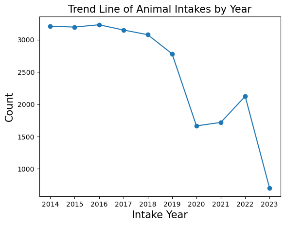
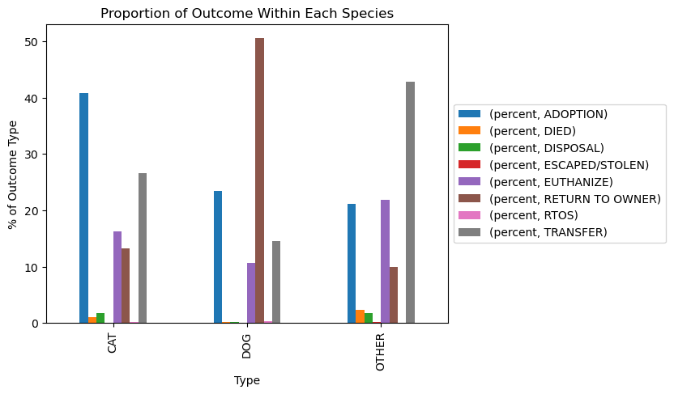
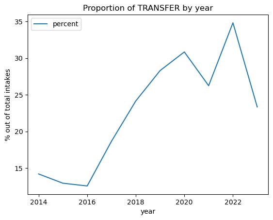
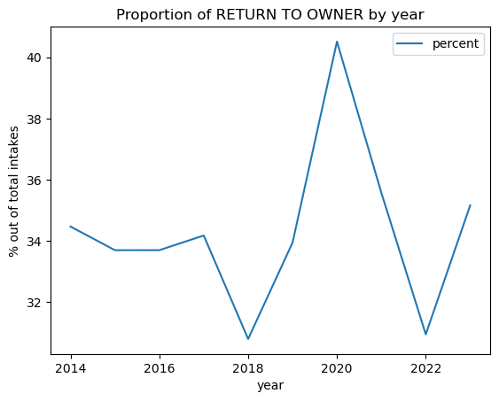
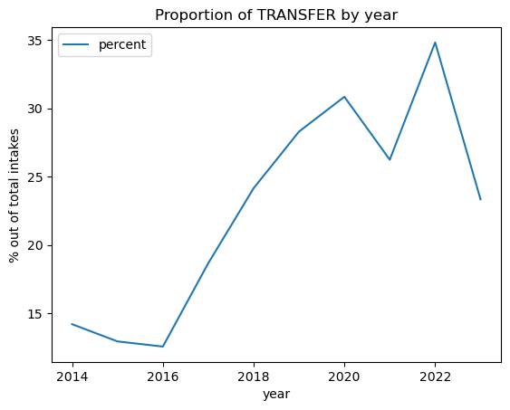
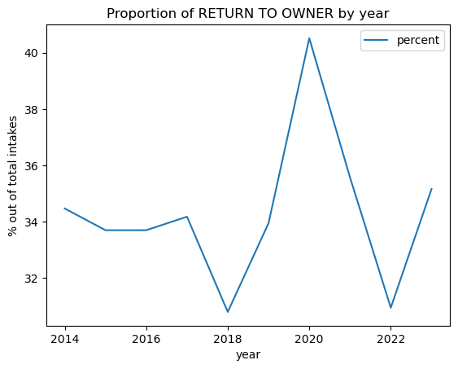
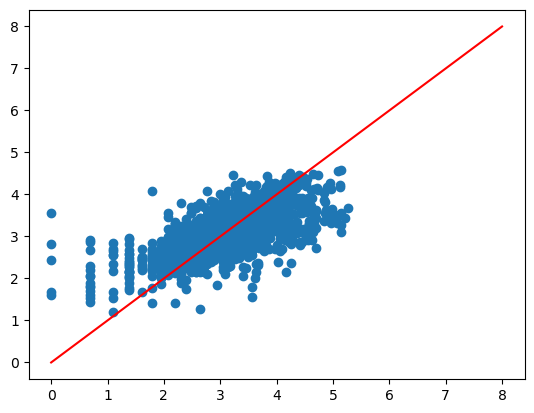

Analysis of Animal Shelter Data in Sonoma County, CA#
Goal of Analysis#
Our main goal is to shed insight on the outcomes of animals surrendered to Sonoma County Animal Services.
About the Data#
#!pip install catboost
import numpy as np
import pandas as pd
import matplotlib.pyplot as plt
from sklearn.model_selection import train_test_split
import statsmodels.api as sm
import statsmodels.formula.api as smf
from sklearn.metrics import confusion_matrix
from statsmodels.stats.outliers_influence import variance_inflation_factor
import random
random.seed(159)
shelter_data = pd.read_csv('./data/Animal_Shelter_Data.csv')
shelter_data.shape
(25008, 24)
shelter_data.head()
| Name | Type | Breed | Color | Sex | Size | Date Of Birth | Impound Number | Kennel Number | Animal ID | ... | Intake Subtype | Outcome Type | Outcome Subtype | Intake Condition | Outcome Condition | Intake Jurisdiction | Outcome Jurisdiction | Outcome Zip Code | Location | Count | |
|---|---|---|---|---|---|---|---|---|---|---|---|---|---|---|---|---|---|---|---|---|---|
| 0 | RAZOR | DOG | BOSTON TERRIER | BLACK/WHITE | Neutered | SMALL | 10/29/2009 | K22-043412 | TRUCK | A396382 | ... | FIELD | RETURN TO OWNER | FLD_IDTAG | UNKNOWN | HEALTHY | SANTA ROSA | SANTA ROSA | 95404.0 | 95404(38.43807, -122.71247) | 1 |
| 1 | NaN | OTHER | PIGEON | GRAY/WHITE | Unknown | SMALL | NaN | K23-044095 | TRUCK | A416206 | ... | FIELD | EUTHANIZE | INJ SEVERE | UNKNOWN | HEALTHY | SANTA ROSA | NaN | NaN | NaN | 1 |
| 2 | MAX | DOG | BORDER COLLIE | BLACK/TRICOLOR | Neutered | MED | 03/10/2020 | K23-044090 | DS80 | A399488 | ... | FIELD | RETURN TO OWNER | OVER THE COUNTER_CALL | UNKNOWN | PENDING | COUNTY | COUNTY | 95472.0 | 95472(38.40179, -122.82512) | 1 |
| 3 | NaN | CAT | DOMESTIC LH | GRAY/WHITE | Spayed | SMALL | 06/26/2011 | K22-043405 | VET | A414520 | ... | FIELD | DISPOSAL | DOA | UNKNOWN | DEAD | COUNTY | SANTA ROSA | 95403.0 | 95403(38.51311, -122.75502) | 1 |
| 4 | PUDGY | DOG | CHIHUAHUA SH/SCHIPPERKE | TAN | Neutered | MED | 07/20/2013 | K23-043813 | DA27 | A415428 | ... | OVER THE COUNTER | TRANSFER | MUTTVILLE | UNKNOWN | HEALTHY | SANTA ROSA | OUT OF COUNTY | 94103.0 | 94103(37.77672, -122.40779) | 1 |
5 rows × 24 columns
shelter_data.columns
Index(['Name', 'Type', 'Breed', 'Color', 'Sex', 'Size', 'Date Of Birth',
'Impound Number', 'Kennel Number', 'Animal ID', 'Intake Date',
'Outcome Date', 'Days in Shelter', 'Intake Type', 'Intake Subtype',
'Outcome Type', 'Outcome Subtype', 'Intake Condition',
'Outcome Condition', 'Intake Jurisdiction', 'Outcome Jurisdiction',
'Outcome Zip Code', 'Location', 'Count'],
dtype='object')
Data Cleaning#
shelter_data.dropna(subset=['Size'], inplace=True)
shelter_data.isnull().sum()
Name 6567
Type 0
Breed 0
Color 0
Sex 0
Size 0
Date Of Birth 6206
Impound Number 0
Kennel Number 12
Animal ID 0
Intake Date 0
Outcome Date 159
Days in Shelter 0
Intake Type 0
Intake Subtype 0
Outcome Type 165
Outcome Subtype 482
Intake Condition 0
Outcome Condition 508
Intake Jurisdiction 0
Outcome Jurisdiction 3508
Outcome Zip Code 3565
Location 3565
Count 0
dtype: int64
shelter_data.rename(columns={'Intake Subtype': 'Intake_Subtype',
'Intake Type': 'Intake_Type',
'Intake Condition': 'Intake_Condition'}, inplace=True)
Data Assumptions?#
Methods#
EDA#
Explore the Number of Animals in the Shelter by Type#
shelter_data.groupby('Intake_Type')['Type'].value_counts()
Intake_Type Type
ADOPTION RETURN DOG 292
CAT 116
OTHER 4
BORN HERE CAT 16
OTHER 1
CONFISCATE DOG 1456
CAT 245
OTHER 197
OS APPT DOG 1
OWNER SURRENDER CAT 1595
DOG 1414
OTHER 143
QUARANTINE DOG 424
OTHER 277
CAT 118
STRAY DOG 10223
CAT 6603
OTHER 1417
TRANSFER DOG 258
CAT 161
OTHER 12
Name: count, dtype: int64
EDA: What are the Top Cat Breeds in the Shelter?#
cat_data = shelter_data[shelter_data['Type'] == 'CAT']
cat_breed_counts = cat_data['Breed'].value_counts(ascending=True).tail(5)
plt.barh(cat_breed_counts.index, cat_breed_counts)
plt.title('Top Cat Breeds in the Shelter', size=15)
plt.xlabel('Count', size=15)
plt.ylabel('Breed', size=15)
plt.show()

EDA: What are the Top Dog Breeds in the Shelter?#
dog_data = shelter_data[shelter_data['Type'] == 'DOG']
dog_breed_counts = dog_data['Breed'].value_counts(ascending=True).tail(5)
plt.barh(dog_breed_counts.index, dog_breed_counts)
plt.title('Top Dog Breeds in the Shelter', size=15)
plt.xlabel('Count', size=15)
plt.ylabel('Breed', size=15)
plt.show()

EDA: What are the most common names for different species in the shelter?#
top_names = shelter_data.groupby(["Type","Name"], as_index=False).size()
top_names = top_names.sort_values(by='size', ascending=False).groupby(["Type"]).head(3)
top_names
| Type | Name | size | |
|---|---|---|---|
| 4614 | DOG | BUDDY | 131 |
| 6004 | DOG | LUNA | 115 |
| 4402 | DOG | BELLA | 104 |
| 2291 | CAT | MILO | 21 |
| 2197 | CAT | LUCY | 19 |
| 758 | CAT | *LUKE | 17 |
| 7727 | OTHER | *JESSICA | 9 |
| 7864 | OTHER | *ROGER | 7 |
| 8036 | OTHER | OREO | 5 |
From the table above, we can see that the top three most common names for dogs at the adoption centers are Buddy, Luna, and Bella. On the other hand, the top three most common names for adopted cats are Milo, Lucy, and Smokey.
Trend line: which year has the most number of animal intakes?#
shelter_data['Intake Year'] = shelter_data['Intake Date'].apply(lambda x: x[-4:])
# Filter the data to only include records from the year 2014 and later.
shelter_data = shelter_data[shelter_data['Intake Year'] != '2013']
intake_counts = shelter_data.groupby('Intake Year').size()
intake_counts.plot(kind='line', title='Animal Intakes by Year')
plt.scatter(x=intake_counts.index, y=intake_counts)
plt.xticks(np.arange(len(intake_counts)), intake_counts.index)
plt.xlabel('Intake Year', size=15)
plt.ylabel('Count', size=15)
plt.title('Trend Line of Animal Intakes by Year', size=15)
plt.show()

EDA: Outcomes By Species#
# Select species and outcome type
outcome_data = shelter_data.loc[:,["Type", "Outcome Type"]]
outcome_data
| Type | Outcome Type | |
|---|---|---|
| 0 | DOG | RETURN TO OWNER |
| 1 | OTHER | EUTHANIZE |
| 2 | DOG | RETURN TO OWNER |
| 3 | CAT | DISPOSAL |
| 4 | DOG | TRANSFER |
| ... | ... | ... |
| 25003 | CAT | ADOPTION |
| 25004 | OTHER | TRANSFER |
| 25005 | DOG | EUTHANIZE |
| 25006 | DOG | TRANSFER |
| 25007 | OTHER | RETURN TO OWNER |
24853 rows × 2 columns
# Drop NA
outcome_data.dropna(subset=['Outcome Type'], inplace=True)
outcome_data.isnull().sum()
Type 0
Outcome Type 0
dtype: int64
# Calculate the proportion of species within each outcome type
top_outcome = outcome_data.groupby([ "Type","Outcome Type"],as_index=False).size()
top_outcome = top_outcome.groupby([ "Type","Outcome Type"], group_keys=False).agg({"size":"sum"}).groupby(
level=0,group_keys=False).apply(lambda x: 100*x/x.sum()).sort_values(
by=["Type","size", "Outcome Type"], ascending=[False, False, True])
top_outcome =top_outcome.rename(columns={"size":"percent"})
top_outcome
| percent | ||
|---|---|---|
| Type | Outcome Type | |
| OTHER | TRANSFER | 42.814668 |
| EUTHANIZE | 21.902874 | |
| ADOPTION | 21.110010 | |
| RETURN TO OWNER | 9.910803 | |
| DIED | 2.279485 | |
| DISPOSAL | 1.734390 | |
| ESCAPED/STOLEN | 0.247770 | |
| DOG | RETURN TO OWNER | 50.504468 |
| ADOPTION | 23.400115 | |
| TRANSFER | 14.600749 | |
| EUTHANIZE | 10.723551 | |
| RTOS | 0.266647 | |
| DISPOSAL | 0.252234 | |
| DIED | 0.216201 | |
| ESCAPED/STOLEN | 0.036033 | |
| CAT | ADOPTION | 40.857403 |
| TRANSFER | 26.620423 | |
| EUTHANIZE | 16.272458 | |
| RETURN TO OWNER | 13.236297 | |
| DISPOSAL | 1.785308 | |
| DIED | 1.023425 | |
| RTOS | 0.125085 | |
| ESCAPED/STOLEN | 0.079600 |
# Create bar plot to visualize most common outcome type within each species
ax = top_outcome.pivot_table(index="Type", columns="Outcome Type").plot(kind='bar')
ax.legend(loc='center left', bbox_to_anchor=(1, 0.5))
ax.set_ylabel("% of Outcome Type")
ax.set_title("Proportion of Outcome Within Each Species");

Adoption was the most common outcome for cats at 41%. Half of the dogs in the shelter are being returned to owner, whereas most of the other species (43%) are being transferred.
Performance of Shelter based on Adoption rate, Transfer rate, Return-to-owner rate, and Euthanasia Rate#
# Display the overall rates for each species and outcome type throughout all years
rates_df = top_outcome.pivot_table(index="Type", columns="Outcome Type")
rates_df
| percent | ||||||||
|---|---|---|---|---|---|---|---|---|
| Outcome Type | ADOPTION | DIED | DISPOSAL | ESCAPED/STOLEN | EUTHANIZE | RETURN TO OWNER | RTOS | TRANSFER |
| Type | ||||||||
| CAT | 40.857403 | 1.023425 | 1.785308 | 0.079600 | 16.272458 | 13.236297 | 0.125085 | 26.620423 |
| DOG | 23.400115 | 0.216201 | 0.252234 | 0.036033 | 10.723551 | 50.504468 | 0.266647 | 14.600749 |
| OTHER | 21.110010 | 2.279485 | 1.734390 | 0.247770 | 21.902874 | 9.910803 | NaN | 42.814668 |
# Add year column to the dataframe using Outcome Date
outcome_data2 = shelter_data.loc[:,["Outcome Date","Outcome Type"]]
outcome_data2["Outcome Date"] = pd.to_datetime(outcome_data2['Outcome Date'])
outcome_data2["year"] = pd.DatetimeIndex(outcome_data2['Outcome Date']).year
outcome_data2
| Outcome Date | Outcome Type | year | |
|---|---|---|---|
| 0 | 2022-12-26 | RETURN TO OWNER | 2022.0 |
| 1 | 2023-03-15 | EUTHANIZE | 2023.0 |
| 2 | 2023-03-15 | RETURN TO OWNER | 2023.0 |
| 3 | 2022-12-27 | DISPOSAL | 2022.0 |
| 4 | 2023-03-15 | TRANSFER | 2023.0 |
| ... | ... | ... | ... |
| 25003 | 2019-10-23 | ADOPTION | 2019.0 |
| 25004 | 2018-10-10 | TRANSFER | 2018.0 |
| 25005 | 2014-10-02 | EUTHANIZE | 2014.0 |
| 25006 | 2020-08-20 | TRANSFER | 2020.0 |
| 25007 | 2018-03-13 | RETURN TO OWNER | 2018.0 |
24853 rows × 3 columns
# Calculate the proportion of outcome type in each year
yearly_rate = outcome_data2.groupby([ "year","Outcome Type"],as_index=False).size()
yearly_rate = yearly_rate.groupby(["year","Outcome Type"], group_keys=False).agg({"size":"sum"}).groupby(
level=0,group_keys=False).apply(lambda x: 100*x/x.sum()).sort_values(
by=["year","size", "Outcome Type"], ascending=[True, False, True]).reset_index()
yearly_rate =yearly_rate.rename(columns={"size":"percent"})
yearly_rate
| year | Outcome Type | percent | |
|---|---|---|---|
| 0 | 2014.0 | ADOPTION | 36.818033 |
| 1 | 2014.0 | RETURN TO OWNER | 34.465861 |
| 2 | 2014.0 | TRANSFER | 14.211042 |
| 3 | 2014.0 | EUTHANIZE | 12.969618 |
| 4 | 2014.0 | DIED | 0.947403 |
| ... | ... | ... | ... |
| 66 | 2023.0 | EUTHANIZE | 13.112392 |
| 67 | 2023.0 | DIED | 1.008646 |
| 68 | 2023.0 | DISPOSAL | 1.008646 |
| 69 | 2023.0 | RTOS | 0.576369 |
| 70 | 2023.0 | ESCAPED/STOLEN | 0.288184 |
71 rows × 3 columns
# Function to plot trend line for rates given Outcome Type
def trend_proportion(Outcome):
outcome_type = yearly_rate[yearly_rate["Outcome Type"]==Outcome]
ax = outcome_type.plot(x="year",y="percent")
ax.set_ylabel("% out of total intakes")
ax.set_title("Proportion of "+Outcome+" by year")
# Visualize rates
adoption = trend_proportion("ADOPTION")
euthanize = trend_proportion("EUTHANIZE")
transferred = trend_proportion("TRANSFER")
rto = trend_proportion("RETURN TO OWNER")

 



It appears that as the adoption rate declines throughout the years, the shelter chooses to transfer than animals rather than euthanizing.
Modeling#
Predict whether an Animal is adopted eventually#
# Create a new column named Adopted, and assign a value of 0 or 1
# to indicate whether each animal has been adopted or not.
shelter_data['Adopted'] = (shelter_data['Outcome Type'] == 'ADOPTION').astype(int)
#Split the data into test and train
shelter_train, shelter_test = train_test_split(shelter_data, test_size=0.3, random_state=159)
shelter_train.shape, shelter_test.shape
((17397, 26), (7456, 26))
import statsmodels.formula.api as smf
logreg = smf.logit(formula = 'Adopted ~ Type + Sex + Size + Intake_Type + Intake_Condition',
data = shelter_train).fit()
print(logreg.summary())
Warning: Maximum number of iterations has been exceeded.
Current function value: 0.351088
Iterations: 35
Logit Regression Results
==============================================================================
Dep. Variable: Adopted No. Observations: 17397
Model: Logit Df Residuals: 17373
Method: MLE Df Model: 23
Date: Sun, 07 May 2023 Pseudo R-squ.: 0.4198
Time: 23:54:46 Log-Likelihood: -6107.9
converged: False LL-Null: -10527.
Covariance Type: nonrobust LLR p-value: 0.000
============================================================================================================
coef std err z P>|z| [0.025 0.975]
------------------------------------------------------------------------------------------------------------
Intercept -0.1241 0.211 -0.589 0.556 -0.537 0.289
Type[T.DOG] -0.2335 0.070 -3.334 0.001 -0.371 -0.096
Type[T.OTHER] 2.2262 0.136 16.418 0.000 1.960 2.492
Sex[T.Male] -0.3298 0.170 -1.939 0.053 -0.663 0.004
Sex[T.Neutered] 3.5780 0.133 26.839 0.000 3.317 3.839
Sex[T.Spayed] 3.7717 0.134 28.046 0.000 3.508 4.035
Sex[T.Unknown] -0.9605 0.202 -4.758 0.000 -1.356 -0.565
Size[T.LARGE] -2.4246 0.112 -21.598 0.000 -2.645 -2.205
Size[T.MED] -1.9748 0.109 -18.180 0.000 -2.188 -1.762
Size[T.PUPPY] 0.0281 0.159 0.176 0.860 -0.284 0.340
Size[T.SMALL] -1.6344 0.083 -19.802 0.000 -1.796 -1.473
Size[T.TOY] -1.4891 0.131 -11.333 0.000 -1.747 -1.232
Size[T.X-LRG] -2.9262 0.288 -10.168 0.000 -3.490 -2.362
Intake_Type[T.BORN HERE] -27.1539 6.18e+05 -4.39e-05 1.000 -1.21e+06 1.21e+06
Intake_Type[T.CONFISCATE] -2.5505 0.187 -13.675 0.000 -2.916 -2.185
Intake_Type[T.OS APPT] -13.3656 1386.096 -0.010 0.992 -2730.063 2703.332
Intake_Type[T.OWNER SURRENDER] -0.9363 0.167 -5.598 0.000 -1.264 -0.608
Intake_Type[T.QUARANTINE] -3.2875 0.300 -10.961 0.000 -3.875 -2.700
Intake_Type[T.STRAY] -1.8236 0.159 -11.502 0.000 -2.134 -1.513
Intake_Type[T.TRANSFER] -1.3415 0.213 -6.308 0.000 -1.758 -0.925
Intake_Condition[T.TREATABLE/MANAGEABLE] -0.5788 0.091 -6.357 0.000 -0.757 -0.400
Intake_Condition[T.TREATABLE/REHAB] 0.3698 0.078 4.753 0.000 0.217 0.522
Intake_Condition[T.UNKNOWN] -1.3972 0.063 -22.022 0.000 -1.522 -1.273
Intake_Condition[T.UNTREATABLE] -4.1498 0.324 -12.796 0.000 -4.785 -3.514
============================================================================================================
/home/jovyan/envs/shelter/lib/python3.10/site-packages/statsmodels/base/model.py:607: ConvergenceWarning: Maximum Likelihood optimization failed to converge. Check mle_retvals
warnings.warn("Maximum Likelihood optimization failed to "
# Predicting the probability of adopted
y_prob = logreg.predict(shelter_test)
# Predicting the label: 0 or 1?
y_pred = pd.Series([1 if x > 1/2 else 0 for x in y_prob], index=y_prob.index)
from sklearn.metrics import confusion_matrix
y_test = shelter_test['Adopted']
cm = confusion_matrix(y_test, y_pred)
print ("Confusion Matrix : \n", cm)
Confusion Matrix :
[[4851 442]
[ 842 1321]]
TN, FP, FN, TP = cm.ravel()
# What is the Accuracy?
acc= (TN + TP) / sum(cm.ravel())
print('Accuracy is: %.4f' %acc)
# What is the True Positive Rate ?
TPR_logit = TP/(TP+FN)
print('TPR is: %.4f' % TPR_logit)
# What is the False Positive rate ?
FPR_logit = FP/(FP+TN)
print('FPR is: %.4f' % FPR_logit)
Accuracy is: 0.8278
TPR is: 0.6107
FPR is: 0.0835
Predicting Days Before Adoption#
### filtering on animals that are ultimately adopted
adopted_all = shelter_data[shelter_data['Outcome Type'] == 'ADOPTION']
### keeping only relevant columns
adopted = adopted_all[['Type', 'Breed', 'Color', 'Sex', 'Size', 'Date Of Birth', 'Intake Date','Days in Shelter',
'Intake_Type', 'Intake_Subtype', 'Intake_Condition', 'Intake Jurisdiction', 'Location',
'Intake Year']]
adopted = adopted.reset_index(drop=True)
### creating a feature for animal age at intake time
adopted = adopted[~adopted['Date Of Birth'].isna()]
adopted = adopted.reset_index(drop=True)
adopted['age'] = (pd.to_datetime(adopted['Intake Date'], format='%m/%d/%Y') - pd.to_datetime(adopted['Date Of Birth'],
format='%m/%d/%Y')).dt.days
adopted = adopted.drop(columns=['Intake Date', 'Date Of Birth'])
adopted = adopted.fillna('nan')
adopted_all.columns
Index(['Name', 'Type', 'Breed', 'Color', 'Sex', 'Size', 'Date Of Birth',
'Impound Number', 'Kennel Number', 'Animal ID', 'Intake Date',
'Outcome Date', 'Days in Shelter', 'Intake_Type', 'Intake_Subtype',
'Outcome Type', 'Outcome Subtype', 'Intake_Condition',
'Outcome Condition', 'Intake Jurisdiction', 'Outcome Jurisdiction',
'Outcome Zip Code', 'Location', 'Count', 'Intake Year', 'Adopted'],
dtype='object')
adopted['log_days'] = np.log1p(adopted['Days in Shelter'])
adopted_filtered = adopted[adopted['Days in Shelter']< 200]
### test train split
from catboost import CatBoostRegressor
from sklearn.model_selection import train_test_split
from sklearn.model_selection import GridSearchCV
X_train, X_test, y_train, y_test = train_test_split(adopted_filtered.drop(['Days in Shelter', 'log_days'], axis=1),
adopted_filtered['log_days'], test_size=0.2, random_state=42)
model = CatBoostRegressor(cat_features=[0, 1, 2, 3, 4, 5, 6, 7, 8, 9, 10], loss_function='MAE', verbose=500,
depth=9, iterations=1500, learning_rate=0.05)
model.fit(X_train, y_train)
predictions = model.predict(X_test)
0: learn: 0.6449894 total: 73ms remaining: 1m 49s
500: learn: 0.3096699 total: 12.9s remaining: 25.6s
1000: learn: 0.2512172 total: 24.9s remaining: 12.4s
1499: learn: 0.2182771 total: 37.7s remaining: 0us
x = np.linspace(0, 8, 100)
y = x
plt.plot(x, y, color='red');
plt.scatter(x=y_test, y=predictions);
plt.show()

from sklearn.metrics import mean_squared_error
from sklearn.metrics import r2_score
unlog_pred = np.expm1(predictions)
unlog_actual = np.expm1(y_test)
rmse = mean_squared_error(unlog_actual, unlog_pred, squared=False)
r2 = r2_score(unlog_actual, unlog_pred)
print("Testing performance")
print('RMSE: {:.2f}'.format(rmse))
print('R2: {:.2f}'.format(r2))
Testing performance
RMSE: 22.66
R2: 0.32
sorted_feature_importance = model.feature_importances_.argsort()
plt.barh(X_train.columns[sorted_feature_importance],
model.feature_importances_[sorted_feature_importance],
color='turquoise')
plt.xlabel("CatBoost Feature Importance");